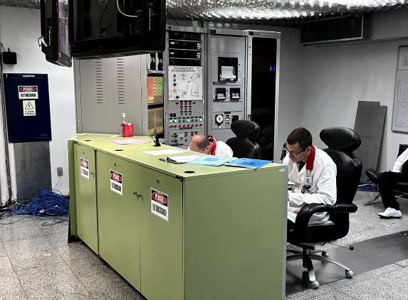

“Бразилия —
это тропическая Россия!”
Лет 20 назад в дружеском порыве изрёк тогдашний бразильский президент Кардозу.
И правда, мало таких похожих и в то же время противоположных страновых (не странных) пар. Первый момент — географический.
Обе огромны по территории, однако Бразилия ровно в два раза меньше по площади, и, если нашу карту заполнить бразильскими тропиками, место "для закрашивания", мягко говоря, останется. Второй — глубинный.
У обоих государств прослеживаются некоторые исторические аналогии: Крымская война — Парагвайская война, революция 1917 г. — движение тенентистов, перестройка — Гражданское правительство в Бразилии после падения военного режима.
Кто-то даже припомнит татаро-монгольское иго и колониальную эпоху. Но это немного напоминает манипуляцию хронологией. К слову, можно также отметить, что обе наши страны заселяют Homo Sapiens — так что сходство очевидное, правда, есть ещё капибары, обезьяны, розовые дельфины — с одной стороны и амурские тигры, выхухоли, косатки — с другой... Но это уже, как говорится, немного другая история — из другого раздела этого сайта. Немного обидно и за тех и за других, что они не могут, как люди, воспользоваться международными авиалиниями и долететь-таки из одной точки мира в другую. А мы смогли. И даже вернулись обратно.
Наш путь
Самый короткий путь из Москвы в Сан-Паулу длится... сутки. Наш длился лет 100, сутки и ещё немного, потому что точкой D мы назначили не Сан-Паулу, а Рио-де-Жанейро.
Мы летели из Шереметьево до Аддис-Абебы 8 часов, из эфиопского хаба до Сан-Паулу 13 часов и ещё час пятнадцать внутренними авиалиниями до Рио.
С учётом непростительно коротких пересадок, из-за которых чуть не опоздали на последний рейс (закладывайте не меньше двух часов для первого раза), где нужно было успеть и получить багаж, и сдать его снова, время в пути составило 1 день 3 часа 15 минут.
Но лично я действительно успела за этот день всё: поспать, поесть, пришить пуговицы к самому длинному платью из своего гардероба, примерить компрессионные носки из набора "Эфиопских авиалиний", поесть, посмотреть 6 или 7 фильмов, пройтись по салону самолёта, поспать... Говорят, что по прилете в Бразилию нужно закладывать в идеале неделю на джет-лаг. Мы не поверили и приходили в себя ещё примерно неделю.
Россия и Бразилия
сегодня
Вообще, российско-бразильские отношения развиваются весьма активно, причём невзирая на политические изменения внутри самой страны: да, нынешний президент Лула, вернувшийся к этому посту спустя 12 лет, и был, и, безусловно, остаётся сторонником России.
Однако и политика Болсонару в целом тоже была ориентирована на нас. Его визит в Москву был искренним, сам он назвал его даже "сигналом для всего мира о том, что наши двусторонние отношения имеют хорошие перспективы".
Если же приехать в столицу Бразилии — Бразилиа — и прогуляться по спальным районам, то можно наглядно увидеть это ментальное сходство даже в облике города: знаменитые “куриные ножки” домов, которыми застроен Васильевский остров в Петербурге, кажется, растут именно отсюда, из этого бразильского города.
Советские архитекторы, безусловно, вдохновлялись причудливыми конструктивистскими формами зданий Оскара Нимейера. Кажется, бразильскую самость может выдать только мирно пасущееся стадо капибар на фоне открыточного моста, напоминающего олимпийские кольца в Сочи или Живописный мост в Москве.
Ещё одно неочевидное сходство с Россией мы нашли в южном штате Бразилии Санта-Катарина. Плантации этого региона сильно напоминают наше Черноземье.
За 15–20 лет (в масштабах истории очень быстро) эта страна в Латинской Америке совершила настоящий технологический рывок и стала одной из самых эффективных сельскохозяйственных держав.
Однако так называемое бразильское “аграрное чудо” было бы невозможным без российских удобрений. 62% всех поставок из России в Бразилию занимают именно минеральные удобрения, что позволяет выращивать тот же кофе в таких районах, где когда-то не росли даже сорняки.
В денежном эквиваленте это $3,5 млрд, в три раза больше, чем, к примеру, весь торговый оборот ЮАР с нашей страной.
ТАСС / dpa / picture-alliance / Evandro Rigon
Алексей Сидоров, заместитель директора Березниковского калийного рудоуправления No 4 ПАО “Уралкалий” в Пермском крае, рассказал, что его предприятие часто посещают делегации из Бразилии: “На пункте отгрузки готовой продукции мы отгружаем хлористый калий, это наше минеральное удобрение, которое мы добываем из сильвинитовой руды, оно отправится на внутренний рынок и на экспорт.
Производительность погрузки чуть больше, чем на фабрике, для того, чтобы был запас, ведь спрос большой. В прошлом году приезжали новые импортёры из Бразилии — они хотят использовать наши удобрения, чтобы увеличить объёмы своей продукции”.
Кстати, знаменитой марке кофе “Пеле” в том же прошлом году исполнилось ровно 50 лет. Вы, рождённые в СССР, помните этот манящий запах кофе? В целом импорт бразильского кофе для России, как ни странно, не на первом месте.
По статистике, на четвёртом. Уступает таким продуктам, как орехи, соя, мясо. Однако тот кофе, который пьём мы, и кофе, который пьют местные, отличаются по вкусовым качествам примерно как кофе и... мясо. Бразильцы отбирают разные зёрна на внутренний и экспортный рынки.

Культура потребления этого напитка в России появилась относительно недавно. И, как ни странно, самые крутые обжарщики кофе, как говорят кофеманы, сконцентрированы в... Ижевске.
Возможно, потому что там находятся самые титулованные в профессиональной среде компании, возможно, потому, что там живут самые успешные маркетологи кофе. На втором месте — Москва и Санкт-Петербург. Может, всё-таки дело в наших удобрениях.
Правда, с недавних пор Россия испытывает некоторые трудности в валютных расчётах из-за западных санкций. Агроинженер Чиего Дуарте подтверждает, что они коснулись и непосредственно самого Запада: “Одна из главных проблем Бразилии в прошлом году была связана как раз с поставками удобрений из-за санкций. Ведь именно Россия — крупнейший производитель удобрений. И именно на них в Бразилии выращивают вообще продукты питания”.
Обычного путника от валютного коллапса спасают банкоматы и карты системы “Юнион пэй”: даже в небольшом портовом городишке Сан-Франсиску-ду-Сул мы с лёгкостью сняли с российской карты реалы без конвертации через доллары. В других масштабах бизнесу и корпорациям неплохо помогает БРИКС: уже в 2019 году долларовые расчёты внутри альянса между странами сократились с 79,9% до 50,4%. А это в денежном эквиваленте годовой товарооборот России и Казахстана, например.
За последние 20 лет российский экспорт в Бразилию сильно дополнился: помимо нефти, зерна и удобрений мы поставляем чёрные металлы, целые суда электрические машины, транспорт, в целом промышленное оборудование, оптику, медицинское оборудование, лекарства и вакцины.
Источник: Портал правительства Москвы
ТАСС / ITAR / Шарифулин Валерий
НА ОДНОМ ЯЗЫКЕ
К слову, в самом южном штате Бразилии — Риу-Гранде-ду-Сул, куда мы направились сразу после Санта-Катарины, — сосредоточены потомки эмигрантов из России, Белоруссии и Украины, осевших здесь после известных событий в начале XX века.
В небольшом городке Кампинас-дас-Миссойс, признанном городом-побратимом нашего Иркутска, есть даже русская православная церковь, в которую ходят бабушки и дедушки, говорящие уже на едва узнаваемом русском, или малоросском, языке вперемешку с немецким, доставшимся от иммигрантов уже времён Второй мировой войны.
Считается, что юг страны — сплошь европейский. В начале XIX века сюда хлынул поток итальянцев, поляков, русских и преимущественно немцев. Но здесь по-прежнему, как и во всей стране, говорят на... португальском, что может показаться немного удивительным, ведь заметная часть Латинской Америки испаноговорящая. Всё тот же штат Санта-Катарина, например, изначально был заселён испанцами, но в 1675 году власть отобрали португальские колонизаторы.
Однако история португальского языка в Бразилии более ранняя. Дело в том, что в 1494 году, спустя два года после открытия Колумбом Америки, но ещё до открытия самой Бразилии, Испания и Португалия договорились провести раздел Западного полушария между собой. И даже подписали по этому поводу Тордесильясский договор (трудно выговаривается — легко гуглится).
Этот "водораздел" прошёл и по суше тоже, по меридиану, который ещё называют папским меридианом. Он проходит по 49°32’56" з. д. И всё, что за этой чертой находится на востоке, отошло Португалии, а всё, что на западе, стало принадлежать Испании. Если вы посмотрите на карту Латинской Америки, то как раз по западной границе Бразилии этот меридиан и проходит. А следовательно, заговорить Бразилии и было суждено на португальском.

Язык
танца
В самом европейском штате Санта-Катарина, в его самом немецком городе Жоинвиль уже 20 лет как обосновалась самая русская школа Большого театра, единственная за рубежом.
Можно сказать, что возникло это уникальное место случайно: по договорённости руководителя труппы Александра Богатырёва, гастролировавшего там, и тогдашнего мэра города Луиса Энрике да Силвейры.
За это время школа превратилась в солидное хореографическое учреждение, поставляющее по всему миру профессиональных артистов балета.
Павел Казарян, директор школы Большого театра в Жоинвиле, приводит статистику: “75 процентов выпускников работают по специальности, причём почти все — на позиции солистов или артистов ведущих балетных трупп мира.
В нашей школе, единственной школе Большого театра за рубежом, учатся многие дети, которые вышли из фавел, таким образом, благодаря усилиям, которые прикладываются каждый день, у этих семей, у этого конкретного ребёнка есть шанс на будущее”.
Классическая строгая школа русского балета сочетается здесь с взрывным темпераментом бразильцев и не имеет ничего общего, конечно, с традиционными школами самбы.
Габриэла Фонтана, преподаватель младших классов школы Большого театра в Бразилии, которая сама является выпускницей учреждения, даёт урок первоклашкам в зале Улановой: “Русский балет — это наша религия.
Я преподаю в первом классе, и я всегда говорю: чтобы стать лучшим, 100 процентов — это мало, нужно выкладываться на 200–300 процентов! Так меня, по крайней мере, научили в русском балете”.
Фавелы
Преступность в Бразилии — не самая высокая в мире, если верить статистике
Хотя лично мы в полицию не обращались, чтобы эта статистика стала полнее. На первом месте пока всё ещё Венесуэла. И, естественно, мы отправились в увлекательное путешествие по этим злачным районам города.
Услуга платная: сопровождение гида, специализирующегося на таких маршрутах, или "свой" человек на месте, которому тоже нужно вручить небольшую сумму, чтобы тот в свою очередь задобрил "смотрящих" парней с автоматами. Мы выбрали оба беспроигрышных варианта.
После подробного инструктажа стало понятно: абсолютно никакие фото- и видеосъёмки не разрешены, говорить ни с полицейскими, крышующими фавелы, ни тем более с жителями фавелы нельзя.
Ни фотографий, ни видеозарисовок колоритных улочек-спрутов внутри самой туристической фавелы Росинья (не путать с названием нашей страны) или той, где снимался "Город бога – 2", Видигал, о которых чаще всего пишут в Интернете, у нас нет. Зато есть красивые видовые фото других районов, которые мы оставим без названий в целях безопасности наших провожатых.
Что удивило: Даже в самой опасной криминальной фавеле мы познакомились с простым учителем химии, который влюблён в Россию: во времена СССР он выучил русский язык по спецпрограмме обмена и сейчас мечтает вернуться в Самару: “Для меня Россия — это не Москва, не Санкт-Петербург.
Это всё-таки столицы. А вот Самара. Я впервые попал туда зимой, первый раз увидел снег, мой друг взял меня на подлёдную рыбалку: меня всё увлекает в вашей стране! Метель, снег, звук птиц, особенно такой: “Карр! Карр!” Россия — такая огромная страна, что можно положить весь мир внутри неё!”
Что понравилось: вид на океан в живописном месте и воздушные змеи, которых весьма кинематографично запускают на крышах домов. Говорят, что раньше воздушные змеи были своеобразным шифром между наркокартелями: малолетние смотрители отслеживали перемещения полицейских по фавеле и в случае приближающейся опасности для наркоторговцев запускали красного змея, в спокойном режиме — зелёного.
Наш гид ещё рассказала о парочке случаев, когда натянутой леской от этих змеев спешащих на мотоциклах полицейских буквально разрезали, но спишем это на страшные байки для туристов.
Язык футбола
В общей сложности мы побывали в четырёх фавелах. Одна из которых находится в северном городе Форталеза, где мы нещадно обгорели в первые же 20 минут пребывания у экватора. Нашим проводником в этот мир стал известный футболист Ари, который когда-то выступал за “Спартак”, “Локомотив” и даже сборную России.
Несколько лет назад он, кстати, получил российский паспорт, сейчас он живёт с русской женой и воспитывает двух дочек. В интервью с нами он признался, что русские футболисты более усердные, на его взгляд, а футболисты из Бразилии пинают мячик ещё в утробе матери. Не секрет, что в России в футбольных трансферах нам интересны в первую очередь именно бразильцы.
Без малого 200 игроков мы приобрели или арендовали за время существования Российской лиги именно из Бразилии. Для бедных мальчишек, гоняющих мяч на пляже или во дворе, футбол, возможно, единственный шанс выбиться в люди.
Сергей Рябков, заместитель министра иностранных дел России, подтверждает, нам точно есть чему поучиться друг у друга: “Да, российские футболисты пока не показывают высоких результатов. Зато первая в мире школа балета Большого театра — это отражение того, насколько мы по духу близки.
И как расстояния не мешают, не затрудняют, наоборот, помогают людям воспринимать культуру и достижения друг друга в разных сферах”. В общем, футбол и для всех остальных как религия — в Бразилии это не фигура речи. Его смотрят везде: в каждом доме, в каждом кафе, в каждом такси. Когда 29 декабря прошлого года умер Пеле, горевала вся страна, да и что там, весь мир.

ЯЗЫК
НАУКИ
Большую долю российского экспорта в Бразилию составляет наукоёмкое производство мирного атома. При помощи нашего лютеция-177, например, в ведущих бразильских онкологических клиниках лечат рак щитовидной железы и неврологические заболевания, в том числе рак мозга.
Институт энергетики и ядерных исследований в Сан-Паулу (IPEN) заказывает медицинские изотопы, например молибден-99, актиний-225 и йод-131, из нескольких стран: России, Германии и Нидерландов. Но большая часть поставок уже традиционно приходится всё же на “Росатом”.
Об этом говорит Эмерсон Бернадеш, руководитель Центра радиофармацевтики Института энергетики и ядерных исследований IPEN: “Лютеций-177 используется при лечении рака щитовидной железы и неврологических заболеваний, в том числе рака мозга.
Этот изотоп мы импортируем благодаря “Росатому”. Ещё из России мы получаем в больших количествах молибден и актиний, порядка 50–60%, и около 80% поставок из России приходятся на поставки йода-131. Есть и другие страны-экспортёры, но они не покрывают наших нужд”.
С 2020 года между IPEN и Национальным исследовательским ядерным институтом МИФИ действует совместная образовательная программа магистратуры и принцип “общего диплома”: полученные дипломы действуют в обеих странах и позволяют трудоустроиться в исследовательские институты как в России, так и в Бразилии — образовательную и материальную базу, курсы и обмен учащимися предоставляют обе стороны.
“Кстати, что я могу сказать насчёт российских учёных, –– поделился впечатлениями Никлаус Веттер, директор Исследовательского центра Института энергетики и ядерных исследований IPEN, –– это огромные фундаментальные знания, особенно в области точных наук, которые, конечно, есть только в России”.
Россия и Бразилия завтра
В прошлом году появился ещё один совместный проект между Россией и Бразилией: бразильская компания INB закупит у нас 330 тонн гексафторида урана, обогащённого урана для АЭС “Ангра”, расположенной в Рио-де-Жанейро. В 2017 году мы уже поставляли аналогичный объём.
“Роскосмос” поможет Бразилии в модернизации космического ракетного комплекса для запусков с космодрома Алкантара. Считается, что он идеально расположен вблизи экватора (в штате Мараньян). Сейчас обсуждается запуск российских ракет-носителей с бразильской площадки.
 ТАСС / Дарья Юрьева
ТАСС / Дарья Юрьева
К слову, это далеко не новое сотрудничество в космической сфере: в обсерватории Пико дос Диас (OPD) в небезызвестном нам уже штате Минас-Жерайс установлена российская система ГЛОНАСС, благодаря которой учёные отслеживают космический мусор.
Космический научно-производственный центр М. В. Хруничева предлагает линейку ракет-носителей для бразильской космической программы “Южный крест”. Так что научные и промышленные связи, наработанные годами, между нашими странами успешно развиваются и сулят светлое будущее для тропической России и северной Бразилии, как завещал Кардозу.